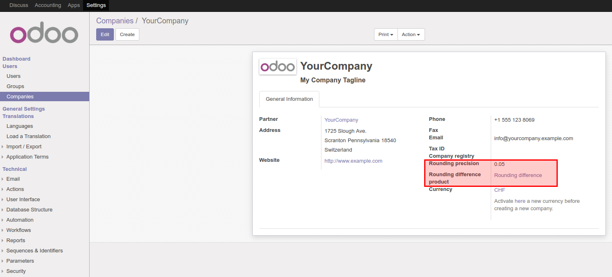
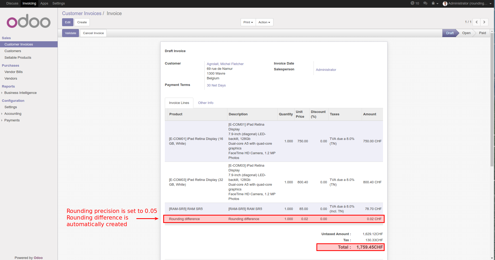

<section class="oe_container">
    <div class="oe_row oe_spaced">
        <h2 class="oe_slogan">Rounding difference</h2>
        <h3 class="oe_slogan">Compute rounding differences on invoices</h3>
        <h4 class="oe_slogan">Step 1</h4>
        <h5 class="oe_slogan">Set the product used for the rounding difference in the company. The module automatically creates a product for the 'Rounding difference'. Check that it is configured as you wish. Especially check the income and expense account because maybe the default account installed by the module doesn't suit your needs.</h5>
        <h4 class="oe_slogan">Step 2</h4>
        <h5 class="oe_slogan">Set the rounding precision for your invoices in the company (must be a number between 0 and 1). Default is 0.05.</h5>
        <div class="oe_demo oe_picture oe_screenshot">
            
        </div>
        <h4 class="oe_slogan">Step 3</h4>
        <h5 class="oe_slogan">Create an invoice and play around with the invoice amounts to check what happens. If Odoo recognizes that there is a rounding difference to match with the configured precision, it will automatically add an invoice line with the appropriate amount.</h5>
        <div class="oe_demo oe_picture oe_screenshot">
            
        </div>
    </div>
</section>